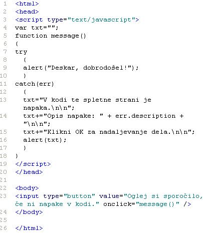

Tisti, ki želi potešiti vse svoje strasti, gasi ogenj s slamo. (Konfucij)
Slika 1 in 2:Ukaz "try..catch" - koda in videz spletne strani z napako v kodi Slika 1 in 2:Ukaz "try..catch" - koda in videz spletne strani brez napake v kodi 1. Izdelaj spletno stran, ki bo izgledala tako, kot kažeta sliki 1 in 2. Datoteko poimenuj "26apriimek.html". Ne pozabi na konènico ".html". POZOR: Najprej NATANÈNO izdelaj vajo v tej uèni enoti in jo pokaži profesorju, nato zapiši odgovore na spodnja vprašanja. 2. V kodo primera v tej uèni enoti vstavi spodaj navedene komentarje na ustrezna mesta, ki jih ti komentarji pojasnjujejo. //Koda, ki omogoèa vstavljanje gumba na spletno stran. //Koda, ki vrne sporoèilo o napaki. //Napoved spremenljivke tipa niz. //Celotna funkcija, ki išèe napake v kodi in jih javlja. //Koda, ki jo pregledujemo in vsebuje napako. 3. Kodo primera v tej uèni enoti spremeni tako, da v izpisu v opozorilnem oknu, ki javlja napako, med posameznimi vrsticami izpisa ne bo prazne vrstice.4. Kodo primera v tej uèni enoti spremeni tako, da bo ves izpis v opozorilnem oknu v eni sami vrstici, ki se lahko kveèjemu prelomi samodejno. 1. Vprašanja za usmerjanje pozornosti in usvajanje novih besed: 1. Kaj omogoèa ukaz "try...catch"? 2. Kaj vsebuje prvi od dveh blokov ukazov ki sestavljata ukaz "try...catch"? 3. Kaj vsebuje drugi od dveh blokov ukazov ki sestavljata ukaz "try...catch"? 4. Kako je imenovan prvi blok ukaza "try...catch"? 5. Kako je imenovan drugi blok ukaza "try...catch"? 2. Zapiši od ene do pet kljuènih besed, ki povzemajo vsebino te uène enote. 3. Vprašanja za razmislek in povezovanje z lastno izkušnjo: 1. Katero od treh razpoložljivih pojavnih oken smo uporabili v primeru na slikah od 1 do 4? 2. Zapiši številko vrstice v kodi na sliki 1, v kateri je prišlo do napake pri tipkanju. 3. Koliko ukazov je v bloku "try" v primeru na sliki 1? 4. Koliko ukazov je v bloku "catch" v primeru na sliki 1? 5. V katerem primeru se izvrši koda bloka "try"; na sliki 1 ali na sliki 3? 6. V katerem primeru se izvrši koda bloka "catch"; na sliki 1 ali na sliki 3? 4. Domaèa naloga: 1. V zvezek prepiši misel, ki je zapisana na zaèetku uène enote z rdeèimi èrkami. Zabeleži nekaj lastnih misli, ki se ti utrnejo ob razmišljanju o njej. 2. Odgovori na vprašanja, na katere nisi uspel/a odgovoriti v šoli. 5. DODATNO DELO: |